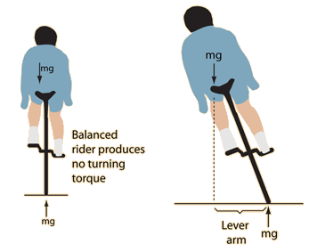

If you lean left, you turn left
|  | A rider leaning left will produce a torque which will cause the bicycle wheel to precess counterclockwise as seen from above, turning the bicycle left. The angulur momentum of the bicycle wheels is to the left. The torque produced by leaning is to the rear of the bicycle, as may be seen from the right-hand rule. This gives a rearward change in the
angular momentum vector,
turning the bicycle left. |
This is a good visual example of the directions of the angular momenta and torques, but the gyroscopic torques of bicycle wheels are apparently quite small (see Lowell and McKell). The gyroscopically motivated descriptions like "leaning left turns it left" are more appropriate to motorcycles. With a bicycle at low speeds, the main turning influence comes from the turning of the handlebars.
In terms of the stability of the bicycle when riding, the association with leaning and turning does hold true. The construction of a bicycle is such that a left lean does cause the front wheel to turn left, contributing a kind of self-stability to the bicycle. If you feel youself unbalanced and leaning left, then turning left does help you correct the imbalance because the centrifugal force associated with the turn does tend to push the top of the bicycle back toward the vertical. Part of the process of learning to ride a bicyle would then seem to be the learning of how to turn the front wheel to produce the needed centrifugal balancing force to bring you back to an upright and balanced orientation. More drastic turns are needed at low speeds to get the necessary centrifugal force which depends upon the inverse of the radius of curvature. Much more gentle turns are sufficient at higher speeds since the centrifugal force depends upon the square of the velocity.
|
Index
Vector rotation examples |